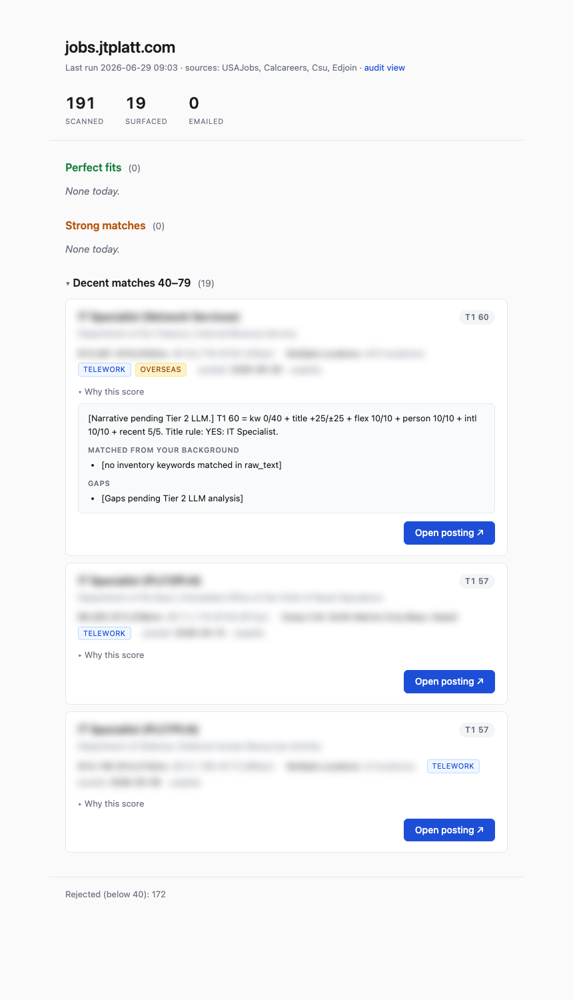

selected project
A job-search agent that runs itself
A personal distributed system that does my job search for me. Every morning it crawls four public-sector job boards (USAJobs, CalCareers, the CSU system, and EdJoin), normalizes a few hundred raw postings, and scores each one against a structured inventory of my actual experience. Only near-perfect matches surface; the rare standout triggers an email.
The architecture splits the heavy work from the serving. A launchd cron job on my Mac runs the full crawl, filter, and score pipeline locally each day, renders a static HTML report, and publishes just that artifact to the server. The server's only job is to serve the page. Nothing scrapes in production, so there is no long-running crawler to babysit and no production cost to the model calls.
Scoring runs in two tiers. A deterministic pass (keywords, title rules, location, salary floor) filters and ranks cheaply; only the survivors reach the LLM tier, which keeps token spend near zero. Crawlers are rate-limited and robots-aware, and an empty scrape never overwrites the last good run.

- Pipeline · daily launchd cron on Mac, publish to server, serve static
- Scoring · deterministic filter, then a Claude LLM tier on the survivors
- Reliability · rate-limited crawlers, robots-aware, empty-scrape protection
Live behind auth at jobs.jtplatt.com. Happy to walk through it on request.
experience
Where I've built things
technology & it
Information Technology Specialist I
RPA automations in BluePrism, ServiceNow workflows and custom forms, SharePoint and external web publishing via Azure, security audits, and ADA / accessibility compliance.
Project Manager & Front-End Developer
Helped scale the team from 4 to 20+ in under a year, managing ad-server systems and project delivery through the acquisition.
Front-End Web Developer
Built marketing sites for Fortune 500 clients, led a team of 8 to ship 85 client sites in one week, and built the Bud Light Super Bowl 2014 campaign site.
finance & analysis
Business Analyst & Senior Accountant
Designed a trade-capture system that cut new-product onboarding from months to days. Ran P&L and budgeting across FX, commodities, and energy desks, and supported the 2006 IPO.
Commodities AR Analyst
Replaced a 1,000-page dot-matrix report with streamlined Excel-based reporting for the COMEX trading desk.
Quality Assurance Analyst
Functional and regression testing for QuickBooks platform updates in an Agile shop.
teaching & cte
Mathematics & Computer Science Teacher
Built a Geometry curriculum to California standards, taught Computer Science with code.org, and earned a CA Career Technical Education credential.
Teacher & Web Development Instructor
Ran an after-school web development course and served as de facto IT support for staff and students.
selected venture
The Sneaker Savant
Founder and operator since 2013. I built a sneaker authentication brand from nothing: a proprietary Shoemetrics grading methodology, a community of 16,000+ on Instagram reaching 1.5M accounts a month at its peak, five trading-card sets, and an advisory role with StockX. Proof I can take a product from idea to audience on my own.
education & credentials
Credentials
- BA, Business Management Economics · UC Santa Cruz
- CA Career Technical Education Credential · Business & Information Systems
- Web Developer Certificate · Coding Dojo
resume
The full history
A current resume is in the works. Until it lands, the complete history lives on LinkedIn, or just reach out by email.